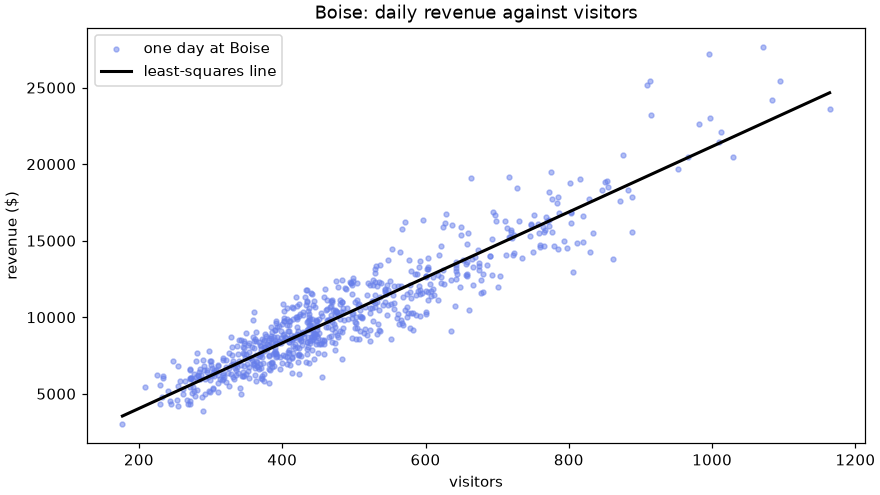

📐 Lesson 1.5: Linear Algebra Essentials
Weighted sums, the @ operator, solving for unknowns, fitting a line through data and measuring distance: the working parts of linear algebra, with no proofs.
🎯 Learning Objectives
By the end of this lesson, you will be able to:
- Compute a dot product and explain it as a weighted sum
- Multiply matrices and vectors with
@, predict the shape of the result, and tell@apart from* - Solve a system of linear equations with
np.linalg.solveand check the answer - Fit a line or a multi-feature linear model with
np.linalg.lstsq, and interpret its coefficients and its error - Measure length and distance with
np.linalg.norm, and standardize features before comparing them
In This Lesson
🧾 The Arithmetic of Tables
"Linear algebra" can sound like a wall of theory. For an analyst it comes down to a handful of operations that keep turning up, because so much of data work is one pattern: multiply each thing by a weight, and add up the results. An order total is quantities weighted by prices. A course grade is scores weighted by percentages. A prediction is measurements weighted by coefficients. Linear algebra is the toolkit for doing that pattern to whole tables at once, and for running it backward to find the weights.
💡 Mental Model: The Receipt
A receipt has a column of quantities and a column of prices. Multiply across each line, add down the page, and you have the total. Nearly everything in this lesson is that receipt, seen from a different side:
- One receipt: a dot product.
- A stack of receipts priced from one price list: a matrix times a vector.
- Knowing the quantities and the totals and working out the prices: solving a system.
- The same, when the totals are noisy and no prices fit perfectly: least squares.
Two words before starting. A vector is a 1-D array: a list of numbers that together describe one thing (one order, one product, one day). A matrix is a 2-D array: a table, where each row is usually one thing and each column one measurement. You have been using both since Lesson 1.1. Only the names are new.
✖️ The Dot Product
A customer buys 2 tents, 1 stove and 3 mugs. Lesson 1.2 gives you the total already: multiply position by position, then sum.
import numpy as np
quantities = np.array([2, 1, 3])
prices = np.array([299.95, 82.95, 24.50])
print(quantities * prices) # the three line totals
print((quantities * prices).sum()) # the order totalOutput
[599.9 82.95 73.5 ]
756.35"Multiply matching positions and add everything up" is so common that it has a name, the dot product, and its own operator: @.
print(quantities @ prices)
print(np.dot(quantities, prices)) # the same thing, as a functionOutput
756.35
756.35Two vectors in, one number out. The two vectors must have the same length, since every quantity needs its price.
Any weighted sum is a dot product. A weighted average is one too: divide by the total weight. Here are three products' ratings, weighted by how many reviews each rating is based on.
ratings = np.array([4.0, 3.7, 4.7])
reviews = np.array([8, 3, 41])
print(ratings.mean().round(3)) # plain average: every product counts equally
print((ratings @ reviews / reviews.sum()).round(3)) # weighted: every review counts equallyOutput
4.133
4.535The weighted average is higher, because the product with the best rating also has by far the most reviews behind it.
📋 A Matrix Times a Vector
Now there are three orders, each with its own quantities of the same three products. Stack them as the rows of a matrix.
orders = np.array([[2, 1, 3], # order A: 2 tents, 1 stove, 3 mugs
[1, 0, 2], # order B
[0, 4, 1]]) # order C
totals = orders @ prices
print(totals)
print(orders.shape, prices.shape, totals.shape)Output
[756.35 348.95 356.3 ]
(3, 3) (3,) (3,)orders @ prices takes the dot product of each row with the price vector: three receipts, totaled in one step. A matrix of shape (3, 3) times a vector of length 3 gives a vector of 3 totals.
This is the single most useful picture in the lesson, because it is also what a prediction looks like. Replace "orders" with "one row of measurements per day" and "prices" with "how much each measurement is worth", and data @ weights is a prediction for every day. You will do exactly that in the least-squares section.
⚠️ @ Is Not *
orders * prices also runs without an error, because the shapes broadcast. But it gives the 3×3 table of line totals, not the three order totals. * multiplies position by position and keeps the shape. @ multiplies and adds, collapsing an axis.
print(orders * prices) # line totals: a table
print((orders * prices).sum(axis=1)) # ...which you would then have to sumOutput
[[599.9 82.95 73.5 ]
[299.95 0. 49. ]
[ 0. 331.8 24.5 ]]
[756.35 348.95 356.3 ]🔗 A Matrix Times a Matrix
Suppose there are two price lists: regular prices and sale prices. Put them side by side as the columns of a matrix with one row per product. Multiplying the orders matrix by it prices every order under every list.
price_lists = np.array([[299.95, 254.96], # tent: regular, sale
[ 82.95, 70.51], # stove
[ 24.50, 20.83]]) # mug
both = orders @ price_lists
print(both)
print(orders.shape, "@", price_lists.shape, "gives", both.shape)Output
[[756.35 642.92]
[348.95 296.62]
[356.3 302.87]]
(3, 3) @ (3, 2) gives (3, 2)Each cell of the result is one dot product: a row of the left matrix with a column of the right one. The first column of the result is the order totals at regular prices (the same numbers as before), the second at sale prices.
The Shape Rule
For that to work, a row on the left must be as long as a column on the right. That gives the one rule of matrix multiplication:
Unlike ordinary multiplication, order matters. orders @ price_lists is (3, 3) @ (3, 2), which works. price_lists @ orders would be (3, 2) @ (3, 3): the inner numbers are 2 and 3, and NumPy refuses.
Transpose: Swapping Rows and Columns
When shapes do not chain, the fix is often to flip one matrix on its side. .T gives the transpose: rows become columns and columns become rows.
print(price_lists.shape, price_lists.T.shape)
print(price_lists.T)
units_sold = orders.sum(axis=0) # total units of each product, shape (3,)
print(price_lists.T @ units_sold) # revenue under each price listOutput
(3, 2) (2, 3)
[[299.95 82.95 24.5 ]
[254.96 70.51 20.83]]
[1461.6 1242.41]price_lists.T has one row per price list, so multiplying it by the units sold of each product gives total revenue under each list: two dot products in one step.
🔍 Solving for Unknowns
Now run the receipt backward. You find three old order slips. Each shows the quantities and the order total, but the unit prices have faded. Can you recover the prices?
Written out, that is three equations with three unknowns (the tent, stove and mug prices):
2 * tent + 1 * stove + 3 * mug = 756.35
1 * tent + 0 * stove + 2 * mug = 348.95
0 * tent + 4 * stove + 1 * mug = 356.30In matrix form this is orders @ unknown_prices = totals: the quantities matrix, times a vector you do not know, equals a vector you do. np.linalg.solve finds the unknown vector.
slip_totals = np.array([756.35, 348.95, 356.30])
recovered = np.linalg.solve(orders, slip_totals)
print(recovered)Output
[299.95 82.95 24.5 ]Tent $299.95, stove $82.95, mug $24.50: the prices you started the lesson with. Always check a solution by putting it back into the original equation.
print(orders @ recovered)
print(np.allclose(orders @ recovered, slip_totals))Output
[756.35 348.95 356.3 ]
True💡 What About the Inverse?
If you have studied this before, you may remember solving A x = b by computing the inverse matrix. NumPy can do that: np.linalg.inv(orders) @ slip_totals gives the same prices. In practice, prefer np.linalg.solve. It is faster and loses less accuracy to rounding, because it never builds the inverse. You will rarely need an inverse for its own sake.
When There Is No Single Answer
solve needs as many independent equations as unknowns. If one order slip is just another one doubled, it adds no new information, and no unique set of prices exists. NumPy calls such a matrix singular and raises an error. That case is shown in Common Mistakes.
📈 Least Squares: The Best Line
Three clean equations and three unknowns is a textbook situation. Real data looks different: hundreds of equations, a few unknowns, and noise. No set of weights satisfies every equation exactly. The question becomes "which weights come closest?", and that question is the doorway to regression, one of the most used tools in all of data analysis.
Here is a concrete case. At the Boise store, how is a day's revenue related to the number of visitors? Load the data and keep Boise's days with revenue recorded.
def load(col, dtype=float):
"""Read one column of daily_sales.csv into an array."""
return np.genfromtxt("data/daily_sales.csv", delimiter=",",
skip_header=1, usecols=col, dtype=dtype)
dates = load(0, dtype="datetime64[D]")
stores = load(1, dtype=str)
visitors = load(2)
revenue = load(5)
promo = load(7)
keep = (stores == "Boise") & ~np.isnan(revenue)
x = visitors[keep]
y = revenue[keep]
print(x.size, "days")
print(x[:4], y[:4])Output
726 days
[333. 308. 290. 369.] [5962. 6583.13 3866.59 7667.88]The model is a straight line: revenue = intercept + slope * visitors. Every day gives one equation of that form, 726 equations in all, with only two unknowns (the intercept and the slope). To write them in matrix form, build a matrix with one row per day and one column per unknown: a column of ones (which multiplies the intercept) and a column of visitor counts (which multiplies the slope).
A = np.column_stack([np.ones(x.size), x])
print(A.shape)
print(A[:4])Output
(726, 2)
[[ 1. 333.]
[ 1. 308.]
[ 1. 290.]
[ 1. 369.]]Now A @ [intercept, slope] is the line's prediction for every day, and we want the pair of numbers that makes those predictions as close as possible to y. np.linalg.lstsq ("least squares") finds it. It returns four things, and the first is the solution. (coef, *_ = ... keeps the first and collects the rest under the throwaway name _.)
coef, *_ = np.linalg.lstsq(A, y) # keep the first result, discard the other three
intercept, slope = coef
print(coef)
print(f"revenue = {intercept:.2f} + {slope:.2f} * visitors")Output
[-238.85183704 21.39337273]
revenue = -238.85 + 21.39 * visitorsRead the slope as a sentence: at Boise, each additional visitor goes with about $21 more revenue. That fits what you already know from the Lesson 1.2 scorecard: about 23.6% of visitors buy, and an average purchase is about $88.66, and 0.236 × 88.66 is $20.92 per visitor. Two different routes, nearly the same number.
The intercept is where the line would cross zero visitors. No day comes close to having zero visitors, so do not read meaning into it. Its job is to let the line sit at the right height.
Why "Least Squares"?
The gap between an actual value and the line's prediction is called a residual. "Closest" needs a definition, and the standard one is: make the sum of the squared residuals as small as possible. Squaring makes every miss count as positive and punishes large misses more than small ones.
predicted = A @ coef
residuals = y - predicted
print(residuals[:4].round(2))
print(f"typical miss (RMSE): ${np.sqrt((residuals ** 2).mean()):,.2f}")
r_squared = 1 - (residuals ** 2).sum() / ((y - y.mean()) ** 2).sum()
print(f"R squared: {r_squared:.3f}")Output
[ -923.14 232.82 -2098.64 12.58]
typical miss (RMSE): $1,344.33
R squared: 0.869Two summary numbers are worth knowing now, and Module 4 returns to both. RMSE (root mean squared error) is the typical size of a miss, in the same units as the thing predicted: dollars. R squared is the share of the day-to-day variation in revenue that the line accounts for: 1 would be a perfect fit and 0 no better than always guessing the average.
import matplotlib.pyplot as plt
line_x = np.array([x.min(), x.max()])
line_y = intercept + slope * line_x
fig, ax = plt.subplots(figsize=(8, 4.5), layout="constrained")
ax.scatter(x, y, s=10, alpha=0.5, color="#667eea", label="one day at Boise")
ax.plot(line_x, line_y, color="black", linewidth=2, label="least-squares line")
ax.set_xlabel("visitors")
ax.set_ylabel("revenue ($)")
ax.set_title("Boise: daily revenue against visitors")
ax.legend()
plt.show()
More Than One Feature
Here is the payoff of the matrix form. To let the model use more information, add columns. Nothing else changes. Add a column that is 1 on sale days and 0 otherwise.
A2 = np.column_stack([np.ones(x.size), x, promo[keep]])
coef2, *_ = np.linalg.lstsq(A2, y)
print(coef2.round(2))
residuals2 = y - A2 @ coef2
print(f"RMSE with visitors only : ${np.sqrt((residuals ** 2).mean()):,.2f}")
print(f"RMSE with visitors and promo : ${np.sqrt((residuals2 ** 2).mean()):,.2f}")Output
[ 189.11 20.34 2502.17]
RMSE with visitors only : $1,344.33
RMSE with visitors and promo : $1,279.09The three coefficients are the intercept, dollars per visitor, and the extra revenue on a sale day beyond what its visitor count alone would predict. Sale days bring more visitors (the slope already covers that) and, on top, each visitor spends more. The typical miss shrank a little, so the extra column earned its place.
✅ You Have Just Done Linear Regression
A model of the form "prediction = intercept + weight × feature + weight × feature..." fitted by least squares is linear regression. Later in the course, the statistics module fits the same model with a library that also reports how uncertain each coefficient is. Underneath, it solves this exact problem. When you meet it, you will know what is inside the box.
⚠️ A Fitted Line Describes, It Does Not Prove
"Each additional visitor goes with $21 more revenue" describes a pattern across days. It is not a promise that bringing one more person through the door produces $21, and it says nothing reliable about days far outside the range you fitted on. Keep that caution close. Exercise 4 shows a coefficient that looks like a business recommendation and is not.
📏 Length and Distance
The last tool answers "how big?" and "how far apart?". The norm of a vector is its length: square every element, add them up, take the square root. For a vector of two numbers that is the Pythagorean theorem.
v = np.array([3.0, 4.0])
print(np.linalg.norm(v))
print(np.sqrt((v ** 2).sum())) # the same calculation by handOutput
5.0
5.0You have already computed one today. RMSE is the norm of the residual vector divided by the square root of how many there are:
print(np.linalg.norm(residuals) / np.sqrt(residuals.size))Output
1344.333868444504Distance: How Alike Are Two Rows?
The distance between two vectors is the norm of their difference. Small distance means the two rows of numbers are alike. That one idea powers "customers like you also bought", grouping similar stores, and finding the past day most like today.
Here are six tents from the Pinecrest catalog, each described by price, weight in kilograms and how many people it sleeps. A shopper is looking at the first one. Which of the others is most like it?
tent_names = np.array(["Drift 1-Person", "Headwater 1-Person", "Ridgeline 2-Person",
"Switchback 2-Person", "Skyline 4-Person", "Talus 6-Person"])
tents = np.array([[299.95, 1.34, 1],
[324.95, 1.07, 1],
[217.95, 1.79, 2],
[434.95, 2.09, 2],
[294.95, 3.27, 4],
[511.95, 8.37, 6]]) # price, weight_kg, sleeps
raw_distance = np.linalg.norm(tents - tents[0], axis=1)
print(raw_distance.round(2))
print("closest:", tent_names[raw_distance[1:].argmin() + 1])Output
[ 0. 25. 82.01 135.01 6.14 212.18]
closest: Skyline 4-Persontents - tents[0] is a broadcast (a table minus a row), and axis=1 asks for one norm per row. The answer, though, is wrong in spirit: the "closest" tent is a four-person model more than twice the weight. It won because its price is $5 away, and price is measured in hundreds while weight and capacity are measured in single digits. Price drowned out everything else.
The cure is the standardizing step from Lesson 1.3: put every column on the same scale first, then measure.
z = (tents - tents.mean(axis=0)) / tents.std(axis=0)
distance = np.linalg.norm(z - z[0], axis=1)
print(distance.round(2))
print("closest:", tent_names[distance[1:].argmin() + 1])Output
[0. 0.28 1.02 1.52 1.84 4.51]
closest: Headwater 1-PersonWith all three features pulling equal weight, the other one-person tent is by far the nearest match, and the four-person tent has dropped to fourth place. That is what a shopper would expect.
⚠️ Standardize Before You Measure Distance
A distance adds up differences across columns, so the column with the biggest numbers dominates unless you put them on a common scale. Any method built on distance inherits this, and it is one of the most common silent errors in analysis.
⚠️ Common Mistakes
Linear algebra errors are mostly shape errors, and you already know how to read shapes. Two of the mistakes below raise no error at all.
1. Shapes That Do Not Chain
wrong_order = price_lists @ ordersError
ValueError: matmul: Input operand 1 has a mismatch in its core dimension 0, with gufunc signature (n?,k),(k,m?)->(n?,m?) (size 3 is different from 2)What it means: skip to the end of the message: "size 3 is different from 2". The left matrix has 2 columns and the right one has 3 rows, so the inner numbers do not match. Fix: print both shapes. Usually the operands are in the wrong order, or one of them needs .T.
2. Using * Where You Meant @
print((orders * prices).shape) # a table of line totals, no error
print((orders @ prices).shape) # the three order totalsOutput
(3, 3)
(3,)What happens: when the shapes happen to broadcast, * gives a result of the wrong shape with no complaint. Fix: ask yourself whether you want "position by position" (*) or "multiply and add" (@), and check the shape of what comes back.
3. A System With No Unique Answer
repeated = np.array([[2.0, 1.0, 3.0],
[4.0, 2.0, 6.0], # exactly double the first row
[0.0, 4.0, 1.0]])
answer = np.linalg.solve(repeated, np.array([756.35, 1512.70, 356.30]))Error
LinAlgError: Singular matrixWhat it means: the second equation repeats the first, so there are really two equations for three unknowns, and many sets of prices fit. The matrix is singular. Fix: you need another independent piece of information. In data work this shows up when one column is an exact multiple or sum of others (the same amount in dollars and in cents, say). Drop the redundant column.
4. Forgetting the Column of Ones
no_ones = x.reshape(-1, 1) # visitors only, as a one-column matrix
coef_bad, *_ = np.linalg.lstsq(no_ones, y)
miss_bad = y - no_ones @ coef_bad
print(coef_bad)
print(f"RMSE without the ones: ${np.sqrt((miss_bad ** 2).mean()):,.2f}")
print(f"RMSE with the ones : ${np.sqrt((residuals ** 2).mean()):,.2f}")Output
[20.95043347]
RMSE without the ones: $1,346.45
RMSE with the ones : $1,344.33What happened: with no column of ones there is no intercept, so the line is forced through the point (0 visitors, $0). It still runs and still returns a slope, just a slightly different one with a slightly worse fit. On other data the damage can be large. Fix: include np.ones(n) as a column unless you have a real reason to force the line through zero.
5. Missing Values in the Data
boise_all = stores == "Boise" # includes the day with no revenue
A_nan = np.column_stack([np.ones(boise_all.sum()), visitors[boise_all]])
coef_nan, *_ = np.linalg.lstsq(A_nan, revenue[boise_all])
print(coef_nan)Output (one missing value ruins every coefficient)
[nan nan]What happened: a single nan among 727 revenues spread into every sum the method computes. There are no nan-aware versions of solve or lstsq. Fix: filter out incomplete rows first, as the lesson did with & ~np.isnan(revenue), and apply the same mask to every array.
🛠️ Project: A First Revenue Model
Asheville is Pinecrest's smallest store, and its manager wants a simple way to turn a forecast of visitors into a forecast of revenue for staffing and stock. You will fit a model, measure how good it is, improve it with two more features, use it to predict three scenarios, and then look hard at where it fails. Work in a new notebook called lesson_1_5_project or a script called revenue_model.py. Allow about 35 minutes.
🛠️ Step 1: Load Asheville's complete days (5 min)
Build one mask for "Asheville and revenue present" and apply it to every column you will use, so the arrays stay parallel. Compute the weekday as in Lesson 1.2 (the first row of the file is a Monday).
import numpy as np
def load(col, dtype=float):
return np.genfromtxt("data/daily_sales.csv", delimiter=",",
skip_header=1, usecols=col, dtype=dtype)
dates = load(0, dtype="datetime64[D]")
stores = load(1, dtype=str)
visitors, revenue, promo = load(2), load(5), load(7)
weekday = (dates - dates[0]).astype(int) % 7 # 0 = Monday ... 6 = Sunday
keep = (stores == "Asheville") & ~np.isnan(revenue)
day = dates[keep]
x = visitors[keep]
y = revenue[keep]
is_promo = promo[keep]
is_weekend = (weekday[keep] >= 5).astype(float)
print(y.size, "days")
print(f"mean visitors {x.mean():.0f}, mean revenue ${y.mean():,.2f}")Output
726 days
mean visitors 275, mean revenue $5,703.83🛠️ Step 2: Fit revenue against visitors (7 min)
Build the two-column matrix (ones, visitors), fit it with np.linalg.lstsq, and write the result as a sentence.
A1 = np.column_stack([np.ones(x.size), x])
coef1, *_ = np.linalg.lstsq(A1, y)
print(coef1.round(2))
print(f"revenue = {coef1[0]:.2f} + {coef1[1]:.2f} * visitors")Output
[ 4.73 20.73]
revenue = 4.73 + 20.73 * visitorsEach additional visitor at Asheville goes with roughly $21 of revenue, close to the Boise figure. That is reassuring: the Lesson 1.2 scorecard found the stores convert and spend alike.
🛠️ Step 3: Score the model (6 min)
Write a small function that takes a matrix and coefficients and returns RMSE and R squared, since you will score a second model next. Use np.linalg.norm for the RMSE.
def score(A, coef, y):
residuals = y - A @ coef
rmse = np.linalg.norm(residuals) / np.sqrt(y.size)
r_squared = 1 - (residuals ** 2).sum() / ((y - y.mean()) ** 2).sum()
return rmse, r_squared
rmse1, r2_1 = score(A1, coef1, y)
print(f"visitors only: RMSE ${rmse1:,.2f}, R squared {r2_1:.3f}")
print(f"for scale, revenue's own standard deviation is ${y.std():,.2f}")Output
visitors only: RMSE $902.58, R squared 0.809
for scale, revenue's own standard deviation is $2,062.98Without a model, the best single guess for any day is the mean, and its typical miss is the standard deviation. The model's typical miss is far smaller, which is what an R squared of about 0.81 is telling you.
🛠️ Step 4: Add sale days and weekends (7 min)
Widen the matrix with two more columns of ones and zeros, refit, and compare.
A2 = np.column_stack([np.ones(x.size), x, is_promo, is_weekend])
coef2, *_ = np.linalg.lstsq(A2, y)
for name, c in zip(["intercept", "per visitor", "sale day", "weekend"], coef2):
print(f"{name:<12} {c:>10.2f}")
rmse2, r2_2 = score(A2, coef2, y)
print(f"four columns : RMSE ${rmse2:,.2f}, R squared {r2_2:.3f}")Output
intercept 265.41
per visitor 19.54
sale day 923.91
weekend 129.63
four columns : RMSE $890.88, R squared 0.814Read each coefficient as "with the other columns held fixed". A sale day is worth about $900 beyond what its visitor count predicts. The weekend coefficient is small next to that: weekends are busy because more people come in, and the per-visitor column already accounts for that. The model improved, modestly.
🛠️ Step 5: Predict three scenarios (5 min)
A prediction is a row of feature values times the coefficients. Put three scenarios in a matrix, with the columns in the same order as A2, and predict them all with one @.
scenarios = np.array([[1, 220, 0, 0], # a quiet weekday, 220 visitors
[1, 380, 0, 1], # a normal Saturday, 380 visitors
[1, 520, 1, 1]]) # a sale Saturday, 520 visitors
forecast = scenarios @ coef2
for label, f in zip(["quiet weekday", "normal Saturday", "sale Saturday"], forecast):
print(f"{label:<16} ${f:>10,.2f} (give or take about ${rmse2:,.0f})")Output
quiet weekday $ 4,563.27 (give or take about $891)
normal Saturday $ 7,818.61 (give or take about $891)
sale Saturday $ 11,477.52 (give or take about $891)Always quote a forecast with its typical miss. A manager who hears "$7,800" plans differently from one who hears "$7,800, give or take $900".
🛠️ Step 6: Study the biggest misses (5 min)
A model's worst errors show what it does not know. Find the five days with the largest residuals in either direction and look at when they were.
residuals = y - A2 @ coef2
worst = np.argsort(np.abs(residuals))[::-1][:5]
day_names = np.array(["Mon", "Tue", "Wed", "Thu", "Fri", "Sat", "Sun"])
for i in worst:
print(day[i], day_names[weekday[keep][i]], f"visitors {x[i]:>4.0f} actual ${y[i]:>9,.2f}"
f" predicted ${(A2 @ coef2)[i]:>9,.2f} miss ${residuals[i]:>9,.2f}")
busy = x > np.percentile(x, 75)
print(f"typical miss on the busiest quarter of days: ${np.sqrt((residuals[busy] ** 2).mean()):,.2f}")
print(f"typical miss on the other days : ${np.sqrt((residuals[~busy] ** 2).mean()):,.2f}")Output
2025-11-29 Sat visitors 530 actual $15,828.25 predicted $11,672.88 miss $ 4,155.37
2025-06-28 Sat visitors 532 actual $14,706.54 predicted $10,788.04 miss $ 3,918.50
2024-06-23 Sun visitors 460 actual $12,538.90 predicted $ 9,381.47 miss $ 3,157.43
2025-09-19 Fri visitors 269 actual $ 8,563.53 predicted $ 5,520.52 miss $ 3,043.01
2025-12-21 Sun visitors 335 actual $ 9,844.11 predicted $ 6,939.51 miss $ 2,904.60
typical miss on the busiest quarter of days: $1,177.08
typical miss on the other days : $772.73All five are days that did far better than predicted, and four of them are weekend days. The last two lines confirm the pattern you saw in the Boise chart: the model's errors grow with the size of the day. "Give or take $900" is too generous for a quiet Tuesday and too tight for a sale Saturday. That is an honest limitation to report with the forecast, and something the statistics module will teach you to diagnose formally.
✅ Project Completion Checklist
- One mask selects Asheville's complete days, and every array you use was filtered with it
- Your first model has two coefficients, and you can state the slope as a sentence in dollars per visitor
scorereturns RMSE and R squared and is used for both models- Your four-column model has a lower RMSE than the two-column one
- Three scenarios are predicted with a single
scenarios @ coef2, each quoted with a "give or take" - You listed the five largest misses and can say what they have in common
🏋️ Hands-on Exercises
Before each calculation, write down the shapes going in and the shape you expect out.
🏋️ Exercise 1: A Packing List
A hiker packs 1 tent (1.34 kg, $299.95), 2 sleeping bags (0.95 kg, $149.00 each), 1 stove (0.41 kg, $82.95) and 4 fuel canisters (0.23 kg, $8.50 each). With one array of quantities, one of weights and one of prices, use @ to find (a) the total weight and (b) the total cost. (c) What is the average price per item, counting every item (all 8), as a weighted average?
💡 Hint
Two dot products with the same quantities vector. For (c), divide the total cost by the total number of items, quantities.sum().
✅ Solution
qty = np.array([1, 2, 1, 4])
weight = np.array([1.34, 0.95, 0.41, 0.23])
price = np.array([299.95, 149.00, 82.95, 8.50])
print((qty @ weight).round(2), "kg")
print((qty @ price).round(2), "dollars")
print((qty @ price / qty.sum()).round(2), "dollars per item")Output
4.57 kg
714.9 dollars
89.36 dollars per item🏋️ Exercise 2: Bundles, Revenue and Cost
Pinecrest sells three bundles made from four products. The bundles matrix gives the quantity of each product in each bundle (rows are bundles). The money matrix gives each product's price and cost (rows are products). (a) What shape will bundles @ money have, and what does each column mean? (b) Compute it. (c) Compute each bundle's profit and its margin as a percentage of price.
bundles = np.array([[1, 1, 0, 2], # Solo Starter
[1, 2, 1, 4], # Weekend Pair
[2, 4, 1, 8]]) # Family Camp
money = np.array([[299.95, 187.74], # tent: price, cost
[149.00, 80.46], # sleeping bag
[ 82.95, 41.20], # stove
[ 8.50, 4.10]]) # fuel canister💡 Hint
(3, 4) @ (4, 2): the inner 4s match and the result is (3, 2). Column 0 of the result is each bundle's total price and column 1 its total cost.
✅ Solution
bundles = np.array([[1, 1, 0, 2],
[1, 2, 1, 4],
[2, 4, 1, 8]])
money = np.array([[299.95, 187.74],
[149.00, 80.46],
[ 82.95, 41.20],
[ 8.50, 4.10]])
result = bundles @ money
print(result.shape)
print(result)
profit = result[:, 0] - result[:, 1]
print(profit.round(2))
print((profit / result[:, 0] * 100).round(1))Output
(3, 2)
[[ 465.95 276.4 ]
[ 714.9 406.26]
[1346.85 771.32]]
[189.55 308.64 575.53]
[40.7 43.2 42.7]🏋️ Exercise 3: Recover the Ticket Prices
A climbing gym sold day passes on three days. The cash totals are known, and the prices are not. Day 1: 30 adult, 12 child and 5 senior passes for $879. Day 2: 22 adult, 20 child, 8 senior for $844. Day 3: 41 adult, 9 child, 2 senior for $1,040. Find the three prices with np.linalg.solve and verify your answer.
💡 Hint
One row per day, one column per kind of pass. The totals are the right-hand side. Check with np.allclose(A @ prices, totals).
✅ Solution
passes = np.array([[30, 12, 5],
[22, 20, 8],
[41, 9, 2]])
cash = np.array([879, 844, 1040])
pass_prices = np.linalg.solve(passes, cash)
print(pass_prices.round(2))
print(np.allclose(passes @ pass_prices, cash))Output
[22. 12. 15.]
True🏋️ Exercise 4: The Staffing Trap (Stretch)
Column 6 of daily_sales.csv is staff_on_duty. Using all four stores' days with revenue present: (a) fit revenue = intercept + b * staff and read the coefficient. It will look like a recommendation: "each extra staff member adds this many dollars a day". (b) Now fit revenue = intercept + b * staff + c * visitors. What happens to the staff coefficient? (c) Write one or two sentences explaining why, given that managers schedule staff in advance according to how busy they expect a day to be.
💡 Hint
Same recipe twice, with a wider matrix the second time. Remember to apply the "revenue present" mask to all three arrays.
✅ Solution
staff = load(6)
ok = ~np.isnan(revenue)
A_staff = np.column_stack([np.ones(ok.sum()), staff[ok]])
c_staff, *_ = np.linalg.lstsq(A_staff, revenue[ok])
print("staff only :", c_staff.round(2))
A_both = np.column_stack([np.ones(ok.sum()), staff[ok], visitors[ok]])
c_both, *_ = np.linalg.lstsq(A_both, revenue[ok])
print("staff and visitors :", c_both.round(2))Output
staff only : [ -56.84 1153.98]
staff and visitors : [-173.7 78.28 19.95]On its own, each staff member appears to be "worth" over a thousand dollars a day. Once visitors are in the model, that falls to a small fraction. Staff did not create the revenue. Managers put more staff on days they expected to be busy, and busy days have high revenue, so staff and revenue rise together because both follow the crowd. Reading the first coefficient as "hire more people, sell more" would be a costly mistake. This is called confounding, and Lesson 4.4 examines this very example in depth.
🎯 Quick Quiz
🎯 Check Your Understanding
Question 1: What does this print?
q1u = np.array([1, 2, 3])
q1v = np.array([4, 5, 6])
print(q1u @ q1v)Question 2: X has shape (5, 3) and W has shape (3, 2). What is the shape of X @ W?
Question 3: Why is np.linalg.solve(A, b) preferred to np.linalg.inv(A) @ b?
Question 4: A least-squares fit uses the matrix np.column_stack([np.ones(n), x]). What is the column of ones for?
Question 5: What does this print?
q5 = np.array([3.0, 4.0])
print(np.linalg.norm(q5))❓ Common Questions at This Stage
What is the difference between @, np.dot and np.matmul?
For 1-D and 2-D arrays, which is everything in this course, they do the same thing. @ is the operator form of np.matmul and is the clearest to read, so use it. np.dot is older, and you will see it in a great deal of existing code. The two differ only for arrays of three or more dimensions.
I have heard of determinants, eigenvalues and SVD. Did we skip them?
Yes, on purpose. They are real and important (eigenvalues and the singular value decomposition are behind techniques such as principal component analysis), and NumPy has them in np.linalg. But you can do a great deal of sound analysis without ever calling them yourself, while dot products, @, least squares and distances appear constantly. If you go on to machine learning, that is the time to study them, with a use in hand.
Why does lstsq return four things?
The solution, the sum of squared residuals, the rank of the matrix (how many of its columns carry independent information), and the matrix's singular values. Most of the time you want only the first, which is why the lesson writes coef, *_ = np.linalg.lstsq(A, y). The rank is worth a glance if a fit looks strange: a rank lower than the number of columns means some columns are redundant.
Is this machine learning?
It is the foundation of it. Linear regression fitted by least squares is usually the first model taught in machine learning, and "a table of features times a vector of weights" is the core operation of far larger models. What machine learning adds is a discipline for judging models on data they have not seen, which is why the random split from Lesson 1.4 matters.
Will I write np.linalg.lstsq in real projects?
Sometimes, for a quick fit. More often you will use a statistics library that reports uncertainty alongside the coefficients, as Module 4 does. The value of today is that those libraries will not be magic to you: you know the matrix they build and the problem they solve.
🌟 Going Further: Bonus Challenge
A straight line assumes each visitor is worth the same on a quiet day as on a packed one. Test that. For the Boise data, add a column of visitors squared (x ** 2) to the matrix, so the model becomes intercept + b * visitors + c * visitors², and refit. This is still linear regression, because the model is linear in the coefficients. Does the RMSE fall? Is c positive or negative, and what would that mean about crowded days? Then make it a fair test: use rng.permutation from Lesson 1.4 to split the days 80/20, fit both models on the 80%, and compare their RMSE on the 20% they have not seen.
📓 Learning Journal
Take five minutes to write in your learning journal (the journal.md file you started in Lesson 0.1, or a paper notebook). Jot down:
- Key concepts you learned today
- Techniques that clicked (and the ones that have not, yet)
- Questions or confusion to come back to
- Ideas to try on your own
- Progress and feelings: how did this lesson go for you?
✍️ This lesson's prompt: Name three weighted sums from your own life or work (a grade, a budget, a score of some kind) and say what the weights are in each. Then look back over Module 1: write one sentence for each of the five lessons about the single idea you most want to keep. Which of them did you find hardest, and what would you tell someone about to start it?
📝 Lesson Summary
🎓 Key Takeaways
- A dot product multiplies matching positions and adds them up: a weighted sum, written
a @ b matrix @ vectortakes the dot product of every row with the vector: many weighted sums, or many predictions, at once(n, k) @ (k, m)gives(n, m): the inner numbers must match, and order matters*is position by position and keeps the shape;@multiplies and adds.Tswaps rows and columnsnp.linalg.solve(A, b)finds the unknowns of an exact system; check withnp.allclose(A @ x, b)np.linalg.lstsq(A, y)finds the best-fitting weights when there are more equations than unknowns: that is linear regression- A column of ones gives the model its intercept; more features are more columns
np.linalg.normmeasures length; the norm of a difference is a distance; standardize the columns first
🏆 What You've Accomplished
- You totaled one order, three orders, and three orders under two price lists, each with a single
@ - You recovered three unknown prices from three order totals and verified them
- You fitted a line to 726 real days and found the same dollars-per-visitor figure by two independent routes
- You extended the model with more features by adding columns, and measured the improvement
- You found a product's nearest match, and saw why standardizing first changes the answer
- You built, scored and stress-tested a revenue model for a real business question
- You finished Module 1: every tool in the rest of this course is built on what you now know
🔭 Looking Ahead
Think about what the last few projects asked of you: remembering that revenue is column 5, loading each column separately, keeping seven parallel arrays in step, applying the same mask to every one of them, working out weekdays by counting from the first row. It all worked, and it was all bookkeeping. In Lesson 2.1: DataFrames and Series you meet pandas, which does that bookkeeping for you: columns have names, rows have labels, text and dates and numbers live side by side in one table, and a filter applies to every column at once. Underneath each column is a NumPy array, and everything you learned in this module (vectorized arithmetic, masks, axis, broadcasting, random sampling) carries straight over.
📋 Before the Next Lesson
- Keep your Module 1 notebooks. Redoing a NumPy project in pandas later is one of the best ways to see what each tool is for.
- Open
data/daily_sales.csvin a text editor or spreadsheet and read the header row. In Lesson 2.1 those names become the way you refer to columns. - Skim the "first look" script you wrote in Lesson 0.1. You typed pandas code there without explanation. See how much of it you can now guess the meaning of.
🌱 Encouragement for the Journey
You have reached the end of the NumPy module, and it is worth pausing on how far that is. Five lessons ago an array was a new word. Today you fitted a regression model with a matrix you built yourself, questioned its coefficients, and caught it making larger errors on busy days. Many people use these tools for years without knowing what is underneath them. You do. If some of this still feels fragile, that is what the next module is for: pandas will have you using these same ideas every few minutes until they are second nature. Well done.